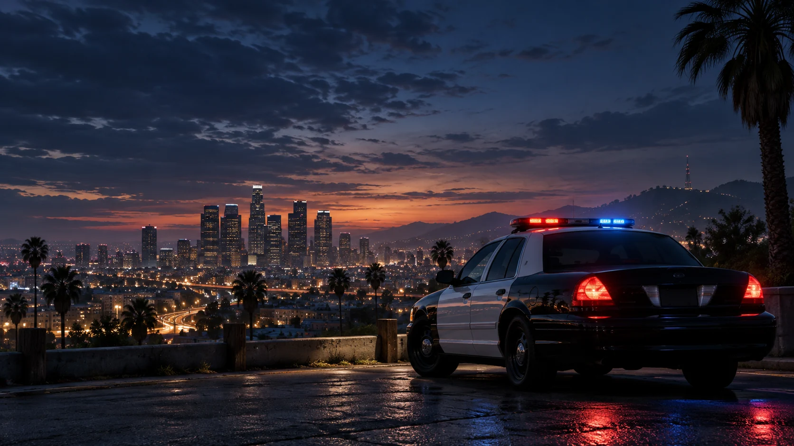

01 / LSPD
Patrol Operations
The people behind the first response.From a conversation on the sidewalk to a call across the city, patrol creates the everyday encounters that make Los Santos feel alive.

Behind the badge is a person.
Beyond the call is a story.
Serve the city. Earn its trust. Make every interaction matter.
Los Santos Police Department is Cosmic’s home for city policing roleplay. Our vision is a department built around thoughtful decisions, teamwork, and the people on both sides of a call.
From a quiet neighborhood patrol to a complex investigation, the goal is to create believable stories together. Professionalism and a willingness to listen belong in every scene.
Treat the person behind every character with patience and respect, even when the scene gets tense.
Listen, keep your radio traffic useful, and give the people around you time to respond.
Create believable encounters and room for consequences. A good scene matters more than winning.
Take feedback well, support your team, and be willing to improve after every shift.
The planned route into LSPD begins with Cosmic membership. Department requirements and training details will be published before recruitment opens.
Explore the community and review the rulebook. Its current wording is still under review.
Read the draft rulesConnect your Discord account and prepare your community application. Submissions are currently closed.
Open your portalWhen LSPD recruitment opens, follow the published application and training process. Community membership alone does not grant an LSPD position.
Proposed areas of service. The final unit structure and availability are being confirmed.
From a conversation on the sidewalk to a call across the city, patrol creates the everyday encounters that make Los Santos feel alive.
Road safety, collision scenes, and vehicle-related investigations offer a focused path for officers who enjoy detail and coordination.
Build longer investigations through interviews, evidence, and collaboration. Give everyone involved room to shape how a case unfolds.
A proposed home for guided patrols, practical feedback, and helping new officers find their confidence within the department.
One department. Part of something bigger.
Explore all departments